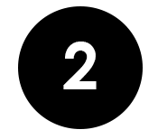
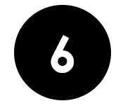

.png)


Вводная часть курса.
1. Формирование контента и гиперссылки.
Что такое гиперссылка?
Гиперссылки — одно из самых интересных нововведений Интернета. Они были особенностью Сети с самого начала, но именно они превращают Интернет в Интернет. Они позволяют нам связывать наши документы с любым другим документом (или ресурсом), с которым мы хотим. С их помощью мы также можем связывать документы с их конкретными частями и делать приложения доступными на простом web-адресе. Почти любой web-контент может быть преобразован в ссылку, так что когда вы кликаете по ней (или иным образом активируете), она заставляет web-браузер перейти на другой web-адрес (URL.)

2.ГРАФИКА в HTML.
«Графика в HTML»
В этом уроке речь пойдет о работе с web-рафикой, как частью HTML страниц. Мы научимся создавать изображения в рамках HTML и настраивать их отображение.
В современном интернет очень популярно использование всевозможной графики на web-страницах, использование звуков и анимации. Многие web–мастера используют графику на своих сайтах для привлечения новых клиентов, для создания броского и уникального дизайна для сайта.
Но не стоит забывать, что графика должна гармонично сочетаться с общим настроением сайта. Она не должна резко выделяться, а лишь немного подчеркивать тематику сайта. Нельзя использовать яркие, кислотные цвета, резко контрастирующие с цветом текста, нельзя использовать фоновые цвета, близкие к цвету текста, нельзя перегружать страницу большим количеством анимации — все это отпугивает пользователя и сильно увеличивает время загрузки страницы.
.png)
3. Вставка объектов.
Основное содержание темы:
- Элементы
<embed>
- Элементы
<object></object>
- Элемент
<iframe></iframe>
- Псевдоэлементы
- Вложенные селекторы
.png)
4. Таблица стилей.
Введение в таблицы стилей
Таблицы стилей представляют наибольшее достижение для дизайнеров Web-страниц, расширяя возможности улучшения внешнего вида страниц. В научных средах, в которых и зародилась Web, люди более сосредоточены на содержании документов, нежели на их представлении. По мере открытия Web прочими людьми ограничения HTML стали источником разочарований, и авторам пришлось уклоняться от стилистических ограничений HTML. Хотя намерения и были добрыми - улучшение представления Web-страниц, технологии имели нежелательные побочные эффекты.
.png)
5.Блочная верстка.
Блочная верстка сайта Раньше на просторах Интернета был широко распространён табличный тип вёрстки, которому посвящена отдельная статья. Однако со временем этот подход к созданию структуры сайта устарел, и на смену ему пришла блочная вёрстка. Суть блочной вёрстки. В графическом редакторе создаётся макет сайта: размечается, где какая область страницы ("Чердак", "Подвал", боковая панель, основной контент) будет находиться и сколько места занимать, готовятся картинки, фоны.

Что такое мультимедиа?
Мультимедиа поставляется во многих различных форматах. Это может быть почти все, что вы можете услышать или увидеть.
Примеры: изображения, музыка, звук, видео, записи, фильмы, анимация и многое другое.
Web-страницы часто содержат мультимедийные элементы различных типов и форматов.
В этой главе вы узнаете о различных мультимедийных форматах.
В HTML 5 имеются два элемента для работы с мультимедиа:
6.Элементы мультимедиа
Что такое мультимедиа?
Мультимедиа поставляется во многих различных форматах. Это может быть почти все, что вы можете услышать или увидеть.
Примеры: изображения, музыка, звук, видео, записи, фильмы, анимация и многое другое.
Web-страницы часто содержат мультимедийные элементы различных типов и форматов.
В этой главе вы узнаете о различных мультимедийных форматах.
В HTML 5 имеются два элемента для работы с мультимедиа:
- Audio.
- Video.
1. Формирование контента и гиперссылки
Что такое гиперссылка?
Гиперссылки — одно из самых интересных нововведений Интернета. Они были особенностью Сети с самого начала, но именно они превращают Интернет в Интернет. Они позволяют нам связывать наши документы с любым другим документом (или ресурсом), с которым мы хотим. С их помощью мы также можем связывать документы с их конкретными частями и делать приложения доступными на простом web-адресе. Почти любой web-контент может быть преобразован в ссылку, так что когда вы кликаете по ней (или иным образом активируете), она заставляет web-браузер перейти на другой web-адрес (URL.)
2. Графика в HTML
В этом уроке речь пойдет о работе с web-графикой, как частью HTML страниц. Мы научимся создавать изображения в рамках HTML и настраивать их отображение.
В современном "Интернет" очень популярно использование всевозможной графики на web-страницах, использование звуков и анимации. Многие web–мастера используют графику на своих сайтах для привлечения новых клиентов, для создания броского и уникального дизайна для сайта.
Но не стоит забывать, что графика должна гармонично сочетаться с общим настроением сайта. Она не должна резко выделяться, а лишь немного подчеркивать тематику сайта. Не рекомендуется использовать яркие, кислотные цвета, резко контрастирующие с цветом текста, использовать фоновые цвета, близкие к цвету текста, перегружать страницу большим количеством анимации — все это отвлекает внимание пользователя и сильно увеличивает время загрузки страницы.
3. Вставка объектов
Основное содержание темы:
- Элементы
<embed>
- Элементы
<object></object>
- Элемент
<iframe></iframe>
- Псевдоэлементы
- Вложенные селекторы
4. Таблица стилей
Введение в таблицы стилей
Таблицы стилей представляют наибольшее достижение для дизайнеров Web-страниц, расширяя возможности улучшения внешнего вида страниц. В научных средах, в которых и зародилась Web, люди более сосредоточены на содержании документов, нежели на их представлении. По мере открытия Web прочими людьми ограничения HTML стали источником разочарований, и авторам пришлось уклоняться от стилистических ограничений HTML. Хотя намерения и были добрыми - улучшение представления Web-страниц, технологии имели нежелательные побочные эффекты.